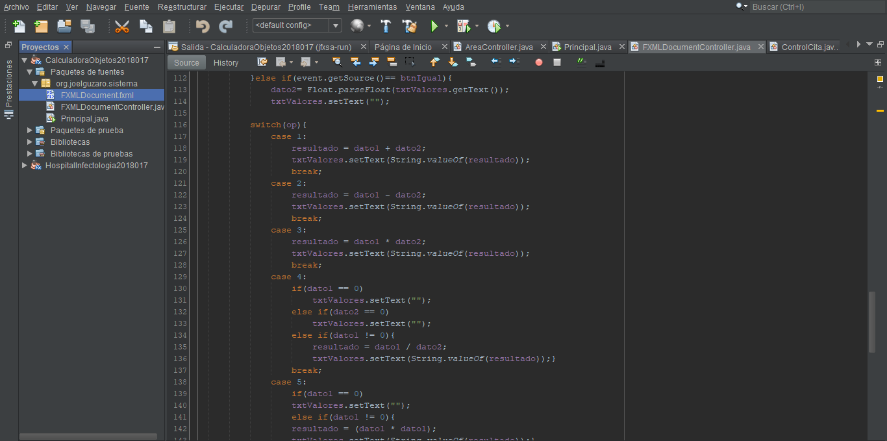

Calculadora en Java
Fecha de Realizacion: 29/04/2019
La calculadora fue programada utilizando el lenguaje Java, se utilizo el patron de diseño Modelo-Vista-Controlador, el codigo fue escrito en el IDE de codigo Netbeans en su version 7.2, las vistas de este proyecto fueron hechas JavaFX de esta manera disminuir los tiempos de trabajo personal.
Para la realizacion de esta calculadora se utilizaron objetos anteriormente diseñados en JavaFx los cuales fueron referenciados en las clases de Java, se utilizo la condicion if para saber los parametros ingresados por el usuario en el momento en el que este lo usaba, tambien se utilizo la sentencia switch para ejecutar las acciones solicitadas por el usuario, este proyecto es una calculadora basica con la que se pueden realizar operaciones como: sumar, restar, dividir multplicar, obtener el porcentaje de cualquier numero y raiz cuadrada, todos los objetos de JavaFX utilizados son botnoes excpetuando uno que es un TextField en donde se muestra las operaciones al usuario.
Este fue mi primer proyecto realizado en Java, en el cual aprendi a utilizar JavaFX y a referenciarlos a las clases Java para poder controlarlos, fue un proyecto en donde adquiri habilidades ya que la mayoria de cosas que hice eran nuevas mi, ayudo a recordar como se utilizaba if y switch ya habia utilizado estas sentencias pero no de una manera muy logica.
Para acceder al proyecto ingrese al siguiente link de github Click Aqui
- 